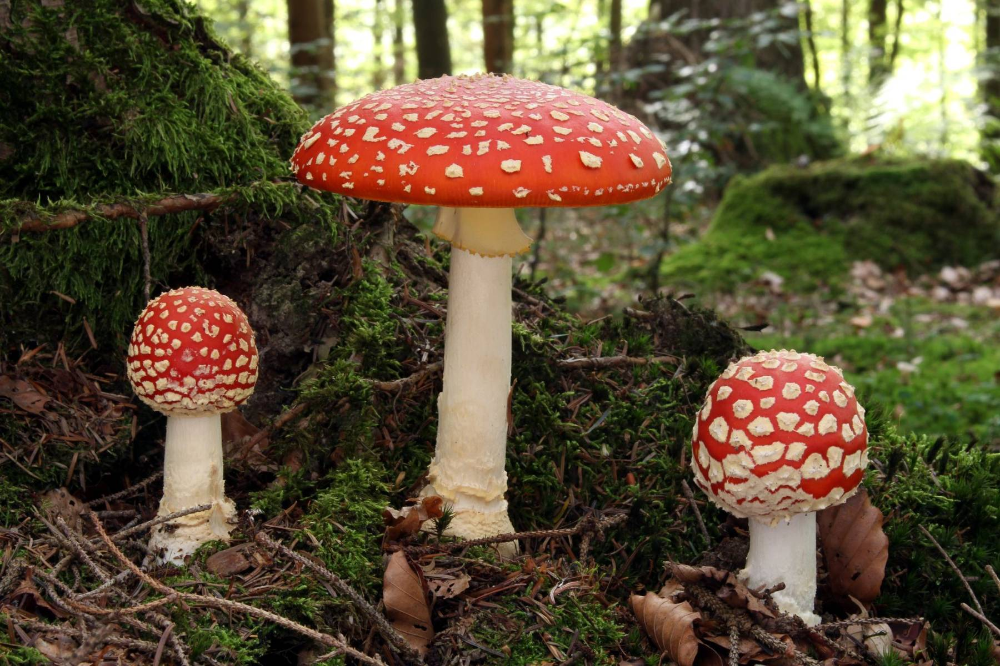
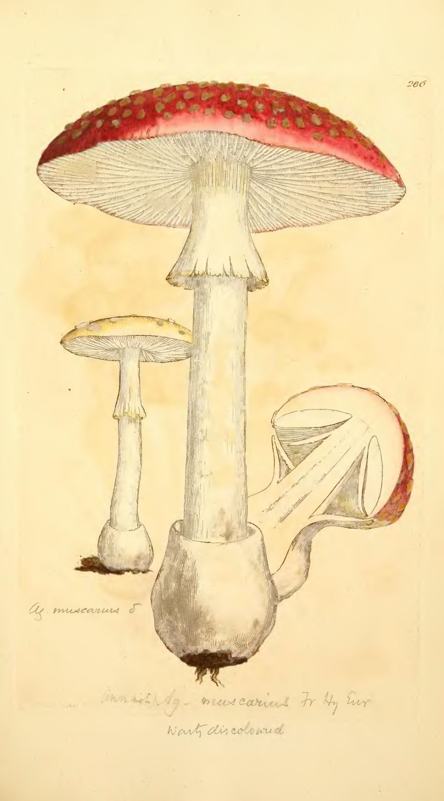
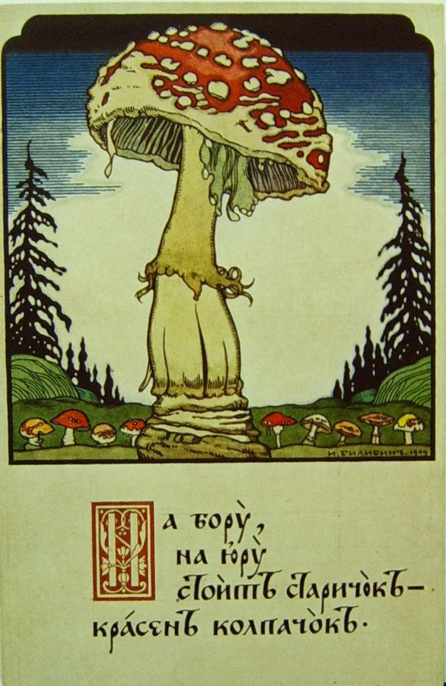
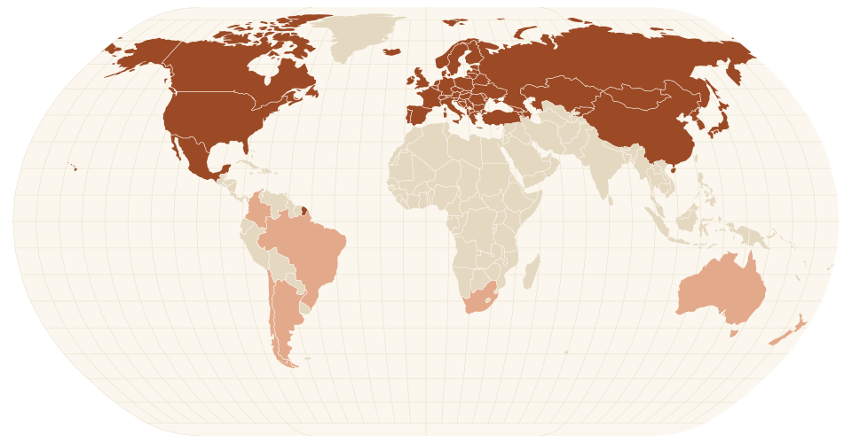
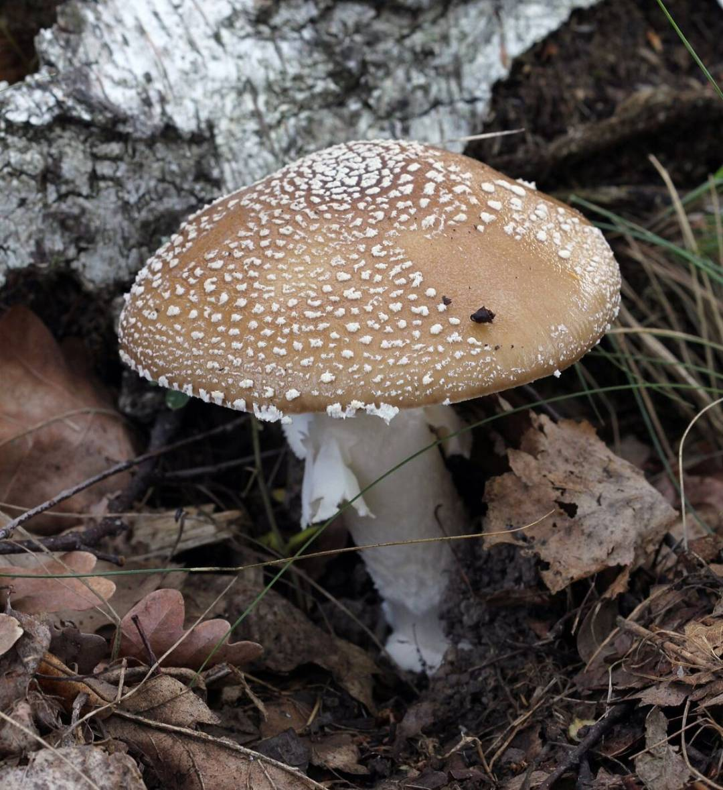
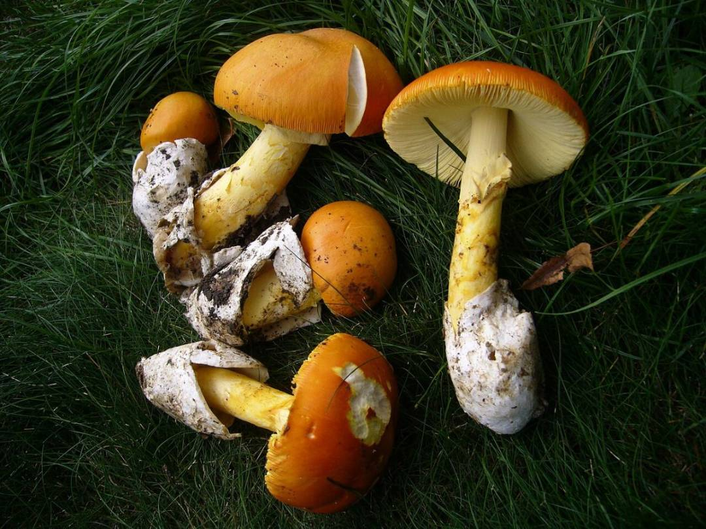
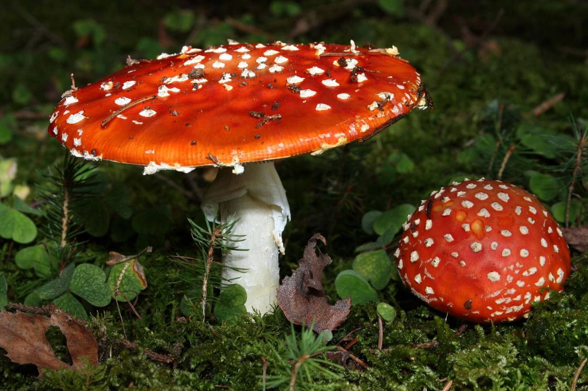
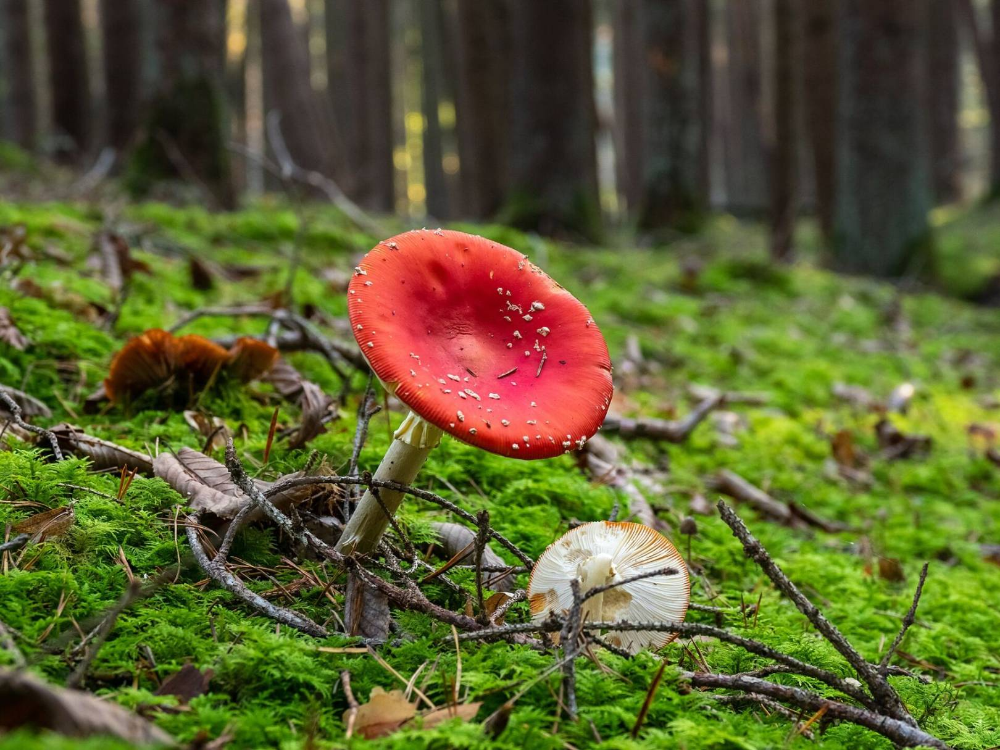
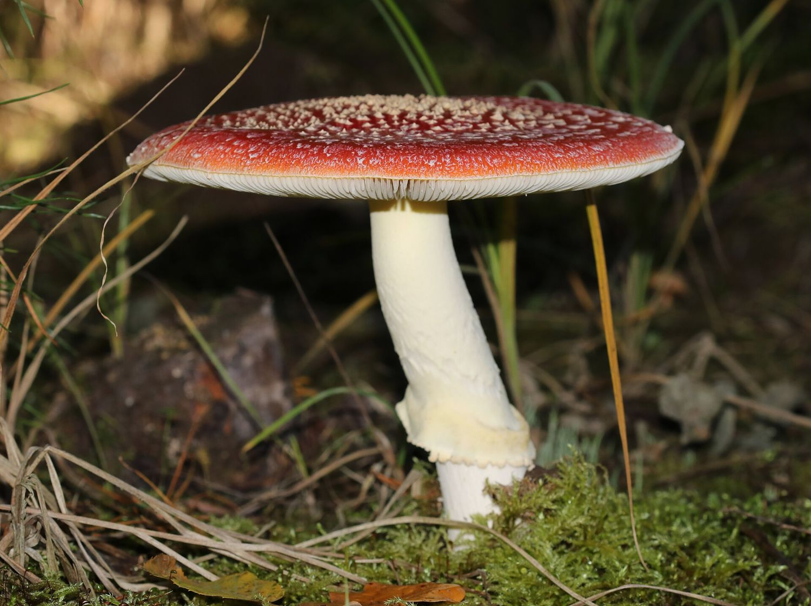
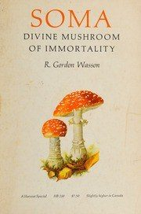

Hongo · Amanitáceas · Bosques del hemisferio norte
Matamoscas
Amanita muscaria (L.) Lam.
Es la seta roja de puntos blancos de los cuentos. Crece cada otoño al pie de abedules y pinos, es tóxica, no contiene psilocibina y quizá sea el hongo más dibujado del mundo.1
También se llamafalsa oronja · rebentabois · brincabois · reig bord · fly agaric · Fliegenpilz · mujomor

- Qué es
- Seta de bosque, tóxica y embriagante
- Territorio
- Bosques templados y fríos del hemisferio norte
- Parte usada
- El sombrero, por tradición seco
- Principios activos
- Ácido iboténico y muscimol
- Empieza y dura
- 30–120 min · 6–10 horas
- Quién guarda su memoria
- Koriakos, chukchis, itelmenos y janty, en Siberia
Micología
Roja, blanca y unida a un árbol
Linneo la describió en 1753 como Agaricus muscarius y Lamarck la llevó en 1783 al género Amanita, donde sigue.6
El sombrero va del rojo vivo al anaranjado y lleva verrugas blancas, restos del velo que la envolvía al nacer; la lluvia puede lavarlas. Debajo tiene láminas blancas, un anillo colgante y un pie blanco que acaba en un bulbo.1
No vive sola. Sus filamentos envuelven las raíces de abedules, pinos, píceas, abetos y robles, y hongo y árbol se alimentan uno al otro. Por eso aparece siempre cerca de ellos, desde el final del verano hasta el otoño, y por eso no se cultiva con facilidad.1
Esto no es una clave de identificación. Los rasgos sueltos engañan y en el mismo género hay setas mortales. Ante la duda, no se come ninguna.

- Familia
- Amanitaceae
- Forma de vida
- Micorriza con árboles
- Sombrero
- Rojo, con verrugas blancas
- Temporada
- Final del verano y otoño
Memoria y tradición
De Siberia a los cuentos
Su uso mejor documentado está en Siberia. Koriakos, chukchis, itelmenos y janty la han tomado en ritos y en fiestas, casi siempre seca.2
Los viajeros que lo contaron en Europa se fijaron en un detalle: parte de la sustancia activa pasa a la orina sin transformarse, y había quien la bebía para repetir el efecto.1
En Europa central es desde hace más de un siglo un amuleto de buena suerte, y en Rusia el mujomor es un personaje de cuento. Iván Bilibin lo dibujó hacia 1900.

En el tiempo
Un prisionero de guerra polaco escribe que los ostiacos del río Irtish comen unas setas con forma de matamoscas y se embriagan con ellas.4
El sueco Philipp Johann von Strahlenberg, doce años cautivo en Siberia, describe cómo se toma.4
Linneo la nombra Agaricus muscarius.6
Lamarck la sitúa en el género Amanita.6
R. Gordon Wasson propone que era el soma de los himnos védicos. La idea sigue muy discutida.4
Sus nombres
- matamoscas, falsa oronja
- castellano
- rebentabois, brincabois
- gallego
- reig bord, oriol foll
- catalán
- fly agaric
- inglés
- Fliegenpilz
- alemán
- amanite tue-mouches
- francés
- mujomor (мухомор)
- ruso
- beni-tengu-take
- japonés
Hacia 1250, Alberto Magno recogió que servía para matar moscas, y de ahí su nombre en media Europa. La revisión de referencia duda de que funcione como insecticida.1
Territorio y cuidado
Donde hay abedules y pinos

Es nativa de los bosques templados y boreales del hemisferio norte, de la península ibérica a Kamchatka y de Alaska a México. Con las plantaciones de pinos y abedules ha viajado al hemisferio sur, y hoy crece también en Australia, Nueva Zelanda, Sudáfrica y parte de Sudamérica.1
Qué ayuda
- Recoger sin remover el suelo ni arrancar el micelio.
- No pisotear el entorno: el hongo vive unido a las raíces del árbol.
- No llamar «chamánico» a un producto comercial: confunde una tradición viva con un objeto de mercado.
Qué contiene
Un acelerador y un freno
El cerebro trabaja con señales que excitan y señales que frenan. La matamoscas toca las dos a la vez, y por eso su efecto mezcla agitación y sopor y es tan difícil de prever.1
La cantidad de cada sustancia cambia mucho de una seta a otra, de un lugar a otro y de una estación a otra. La muscarina, que le debe el nombre, está en cantidades pequeñas.1
 MuscimolSe parece al GABA
MuscimolSe parece al GABAActiva el receptor GABA-A, el principal freno del cerebro: sedación, torpeza y sueños vívidos.
Excita el sistema nervioso y es el más tóxico de los dos. Al secar o calentar la seta, una parte se transforma en muscimol.
La experiencia
Un sueño despierto, a menudo incómodo
Suele empezar con náuseas y vómitos. Después llegan la confusión, la euforia o la agitación, y las cosas y el propio cuerpo parecen cambiar de tamaño. Al final viene un sueño muy profundo.1
No se parece a los hongos de psilocibina. Es más sedante, más confusa y más imprevisible, y con frecuencia resulta desagradable.
Esquema orientativo: cambia con la preparación, la cantidad y la persona.
Investigación
Casi todo está por estudiar
No hay usos terapéuticos demostrados. El muscimol se emplea en el laboratorio para estudiar el receptor GABA-A, pero eso no es un tratamiento.
Un estudio de 2023 analizó los comentarios de grupos de redes sociales favorables a su consumo. Quienes la tomaban decían buscar alivio del estrés, del insomnio, del ánimo bajo o del dolor; los efectos adversos más citados fueron la somnolencia, el dolor abdominal y las náuseas.5
Alcance de estos datosSon testimonios de quienes eligieron escribirlos, sin grupo de comparación. No demuestran que funcione.
Con cuidado
Lo que conviene saber antes
Confundirla con otra amanita. En el mismo género está la oronja verde (Amanita phalloides), la seta más peligrosa de Europa.
La intoxicación es imprevisible y a veces necesita atención en un hospital.3
Alcohol, tranquilizantes, opioides y otros sedantes: sus efectos se suman.
Gominolas, chocolates y extractos con etiquetas poco fiables; algunos llevan sustancias sin declarar.
Parecidos que importan

Contiene las mismas sustancias y causa intoxicaciones más intensas.3

Comestible y muy apreciada. De ella viene «falsa oronja»: una matamoscas lavada por la lluvia puede parecérsele.
No es roja, pero comparte anillo, volva y láminas blancas. Es la que hay que descartar siempre.
Galería
Mirar de cerca




Para seguir
Libros y medicinas emparentadas

Soma: Divine Mushroom of ImmortalityR. Gordon Wasson · 1968En la biblioteca de APDER → PharmacotheonJonathan Ott · 1993En la biblioteca de APDER →Biblioteca de APDERAmanita muscaria: Herb of ImmortalityAmanita muscaria: Herb of ImmortalityDonald E. TeeterEn la biblioteca de APDER →
PharmacotheonJonathan Ott · 1993En la biblioteca de APDER →Biblioteca de APDERAmanita muscaria: Herb of ImmortalityAmanita muscaria: Herb of ImmortalityDonald E. TeeterEn la biblioteca de APDER →Su pariente más cercana, con las mismas sustancias.
Otros hongos, otra química y otra experiencia.
HongoCornezueloClaviceps purpureaEl hongo del centeno del que salió la LSD.
El enigma al que Wasson quiso dar respuesta.
Fuentes
De dónde sale cada dato
- Michelot D, Melendez-Howell LM. Amanita muscaria: chemistry, biology, toxicology, and ethnomycology. Mycol Res. 2003;107(2):131-146.
- Saar M. Ethnomycological data from Siberia and North-East Asia on the effect of Amanita muscaria. J Ethnopharmacol. 1991;31(2):157-173.
- Moss MJ, Hendrickson RG. Toxicity of muscimol and ibotenic acid containing mushrooms reported to a regional poison control center from 2002–2016. Clin Toxicol (Phila). 2019.
- Wasson RG. Soma: Divine Mushroom of Immortality. 1968.
- Ordak M, Galazka A, Nasierowski T, et al. Reasons, form of ingestion and side effects associated with consumption of Amanita muscaria. Toxics. 2023;11(4):383.
- Index Fungorum. Amanita muscaria (L.) Lam., 1783; basónimo Agaricus muscarius L., 1753. indexfungorum.org.
- Rätsch C. The Encyclopedia of Psychoactive Plants. Rochester: Park Street Press; 2005. Entrada «Amanita muscaria».
- Tres ejemplares en distintas fases, entre el musgo. Holger Krisp · CC BY 3.0
- Agaricus muscarius James Sowerby, Coloured Figures of English Fungi or Mushrooms, lámina 286. Londres, 1803. Dominio público
- «Seta» Iván Bilibin. Ilustración, hacia 1900. Dominio público
- Mapa APDER, con datos de Natural Earth · dominio público
- Dibujos de moléculas APDER
- Amanita pantera George Chernilevsky · dominio público
- Oronja Yaqui · CC BY-SA 3.0
- Recién salida, con el velo roto en verrugas. Petar Milošević · CC BY-SA 4.0
- Un ejemplar abierto y otro joven. Holger Krisp · CC BY 3.0
- Bosque de coníferas con musgo, su ambiente habitual. Ermell · CC BY-SA 4.0
- Láminas blancas, anillo y pie con bulbo. George Chernilevsky · CC BY 4.0
Última revisión: 23 de noviembre de 2026. Si ves un error, escríbenos a info@apder.org.